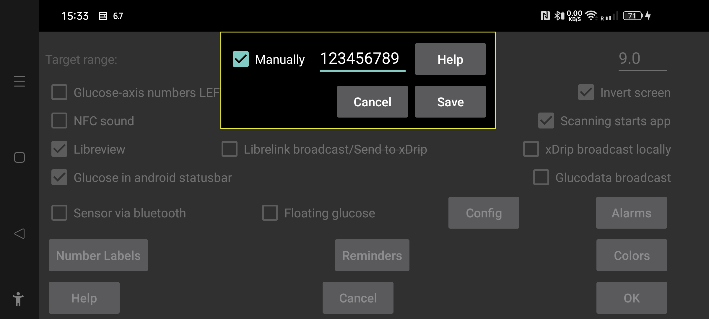

If you have root access connect your phone to your computer and type
adb shell su -c grep PREF_UNIQUE_ID /data/data/com.freestylelibre3.app.nl/shared_prefs/com.freestylelibre3.app.nl_preferences.xml
Where you replace nl with the language code of the Libre3 app you are using. This will return something like:
<string name="PREF_UNIQUE_ID">2fe33cb2-3ca4-4a44-9fea-13c24fddf487</string>
When you later add an account, this doesn't need to be the same as your libreview account id. You can find it when making use of the libreview webinterface. It is displayed in the url after reports. For example https://www.libreview.com/reports/2fe33cb2-3ca4-4a44-9fea-13c24fddf487
From 2fe33cb2-3ca4-4a44-9fea-13c24fddf487, you can get the account id with the following c program:
#include <stdio.h>
#include <ctype.h>
#include <stdint.h>
#include <string.h>
uint32_t getnummer(const char *str,int len) {
uint32_t res=0;
for(int i=0;i<len;i++) {
const char el=str[i];
if(!isspace(el))
res = (res * (0x811C9DC5))^el;
}
return res;
}
int main(int argc,char **argv) {
if(argc>1) {
const char *id=argv[1];
printf("%u\n",getnummer(id,strlen(id)));
return 0;
}
char *buf=NULL;
size_t nr=0;
int len;
while((len=getline(&buf, &nr,stdin))>0) {
if(buf[len-1]=='\n')
--len;
printf("%u\n",getnummer(buf,len));
}
}
Save it in conv.c and compile it with:
gcc conv.c -o conv
run it with
./conv 2fe33cb2-3ca4-4a44-9fea-13c24fddf487
Where you replace 2fe33cb2-3ca4-4a44-9fea-13c24fddf487 with your PREF_UNIQUE_ID.
In the above example it will return 2329149245
You can also run it online:
https://onecompiler.com/c/42ydm9tt6 : Enter you PREF_UNIQUE_ID under STDIN and press RUN.
https://www.programiz.com/online-compiler/3DM2YIAc30Ard : Press “Run” and enter your PREF_UNIQUE_ID at the right (under Output) and press Return.
https://www.onlinegdb.com/NdmcKXrmWq : Fill in PREF_UNIQUE_ID after “Command line arguments:” and press Run.
This number you fill in in Juggluco Left menu->Settings->Libreview->Get Account ID after setting Manually.

Use a new version of the patched Libre 3 app. The Account ID is shown after "Account ID" in the Juggluco screen. Use this in Juggluco Left menu->Settings->Libreview->Get Account ID after setting Manually.